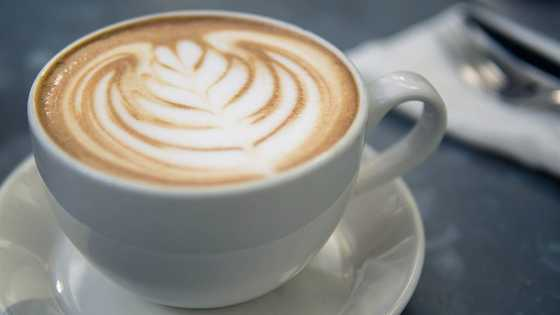
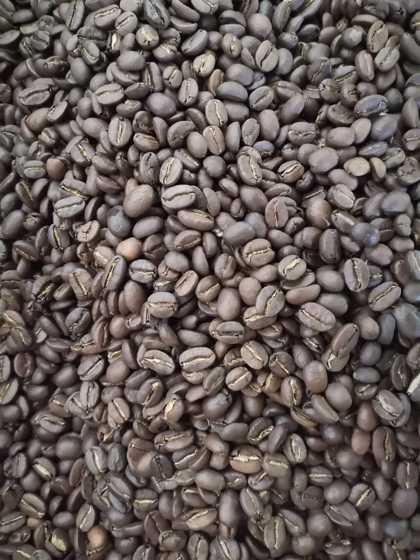
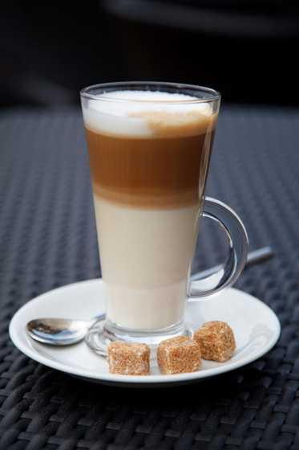
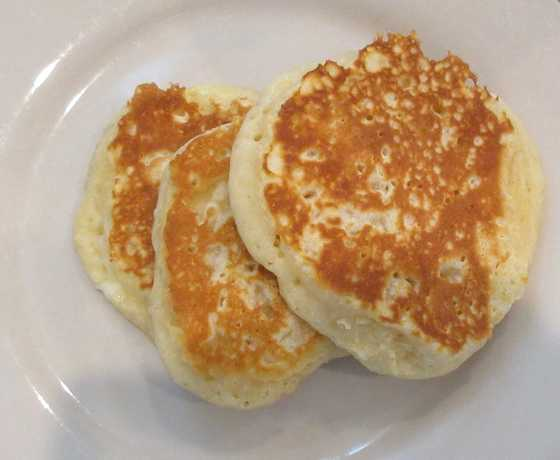
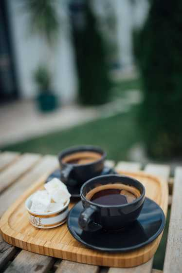

千葉県東金市・サンピア東金1F
焙煎から一杯まで、
ていねいに。
少量ずつ焙煎した豆を、サイフォンで一杯ずつ。自家焙煎珈琲の喫茶店です。
お店の由来・想い
少量ずつ焙煎する、いつも新鮮なコーヒー。
喫茶はぎのは、東金市のショッピングセンター「サンピア」の1階にある、自家焙煎のコーヒーの喫茶店です。産地や品質にこだわったスペシャリティコーヒーを少量ずつ焙煎しており、いつも新鮮なコーヒーを味わえるとご案内されています。淹れ方はサイフォン式で、一杯ずつ。コーヒーに合わせて、手作りのスイーツやランチもあります。
情報源: サンピア東金 店舗紹介(喫茶はぎの) / Instagram(「自家焙煎珈琲の喫茶店」とプロフィールに記載)
店名の由来やお店の始まりの経緯は、公開されている情報では確認できませんでした。そのため、ここでは載せていません。見出しの言い回しなどは制作側の表現です。
生豆

産地と品質にこだわった豆を選ぶ。
焙煎

少量ずつ焙煎して、新鮮さを保つ。
焙煎豆

焼き上げた豆から、香りが立つ。
一杯ずつ

サイフォン式で、一杯ずつ丁寧に淹れる。
上の写真は工程の雰囲気を伝えるフリー素材のイメージです。お店の設備や実際のコーヒーではありません。
メニュー
コーヒーと、手作りの一品を。
ご案内されている内容は次のとおりです。品目・価格・提供時間は変更されることがあるため、詳細は「準備中」としています。

コーヒー各種
サイフォン式で一杯ずつ淹れます。価格: 準備中

手作りスイーツ
コーヒーとご一緒に。内容・価格: 準備中

ランチ
小麦全粒粉のガレットランチ、喫茶店風のナポリタンなどが紹介されています。内容・価格: 準備中
写真はフリー素材のイメージです。実際のメニューとは異なります。





口コミ
こんな声が届きそうです
以下は制作側が想像して書いた例で、実在のお客様の声ではありません。
豆の香りがふわっと立って、一杯ずつ淹れてもらう時間まで楽しめました。買い物のあとに寄れるのもうれしいです。
コーヒーに合わせて、手作りのスイーツをいただきました。ゆっくりできる喫茶店で、また来たいです。
ランチのあとの一杯が格別でした。いつもの喫茶店にしたいと思いました。
アクセス・ご案内
サンピア東金の1階です。
| 所在地 | 千葉県東金市東岩崎8-9 サンピア東金1F |
|---|---|
| 電話 | 準備中 |
| 営業時間 | 準備中 |
| 定休日 | 準備中 |
| SNS | Instagram @hagino_coffee_roastery |
営業時間は情報源によって記載が異なるため、掲載せず「準備中」としています。最新情報はInstagramをご覧ください。